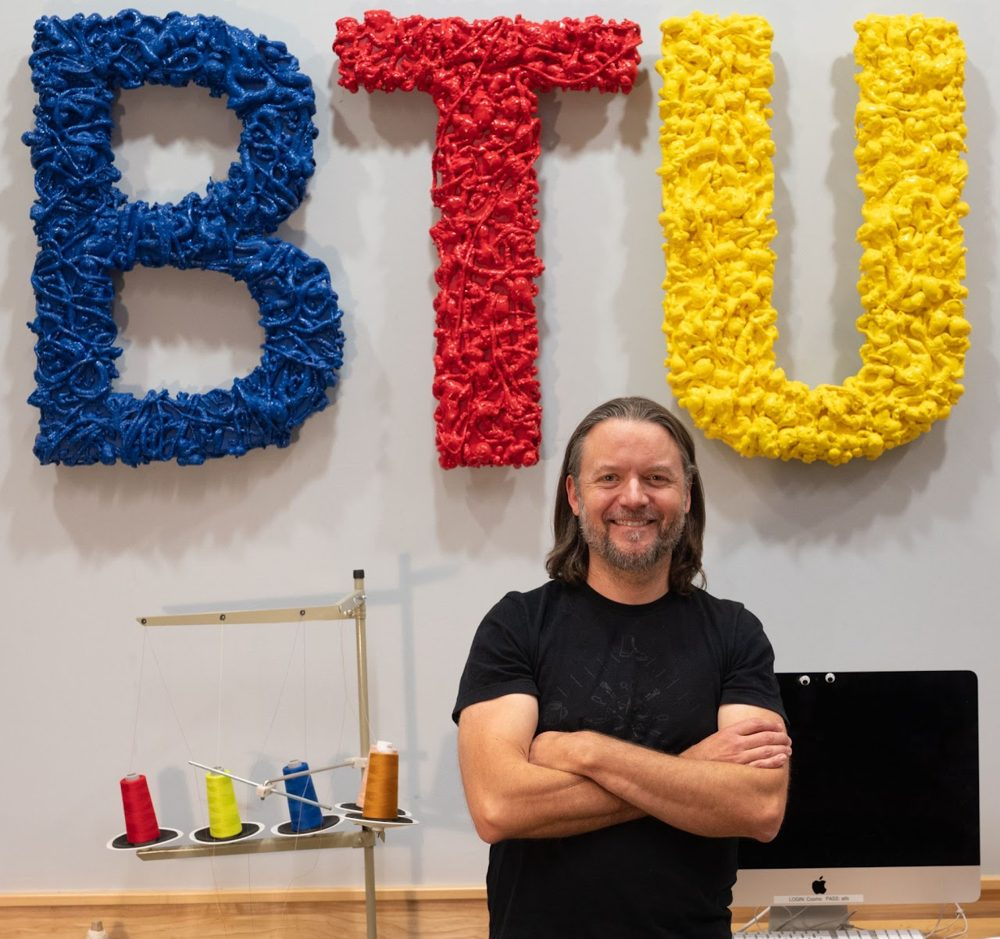

For Faculty

Welcome, and welcome back
The BTU Lab exists to facilitate as much student, faculty and staff coursework, research and experimentation as possible. We support as many as 7000 coursework hours per semester.
Because of this demand, expectations for students and faculty are covered in a series of brief, mandatory, one-time orientations. This page is set up to help you identify needs for yourself and your students and direct you to the next steps.
If you have any questions, contact me at zack.weaver@colorado.edu.
Zack Weaver
Assistant Teaching Professor, ATLAS Institute
Director, BTU Lab
Getting started
Teaching an upcoming class using the BTU Lab? Please fill out this brief form. It's required every semester.
Laser cutting
Laser cutter access requires a one-time orientation. The schedule is on the calendar, and support for students is explained on the lasers page. Instructional requirements for faculty are here.
3D printing
3D printing access requires a one-time, 10-15 minute orientation for all users, which can be scheduled for individuals or classes on request. See the 3D printers page for available resources. Instructional requirements for faculty are here.
Wood shop
Wood shop access requires a one-time orientation regardless of past experience. The schedule is on the calendar, and tools and policies are on the wood shop page. Instructional requirements for faculty are here.
Other resources
BTU's other resources, and the training they require, are covered on the rest of this site. Support is also provided by BTU's student staff, the Mischief Makers, who each list the topics they can help with along with their contact information.
Show off your students' work
We love seeing what you make possible in the BTU Lab. You and your students can help us out by following and tagging your projects on Instagram, @btulab_cu.